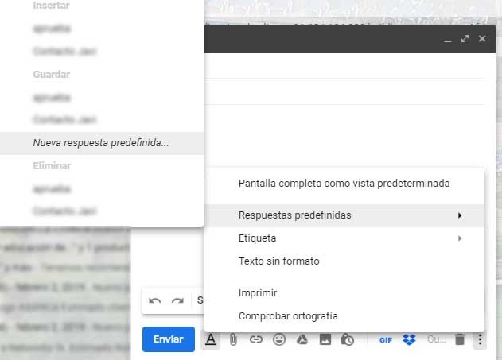

- Accede a gmail.com en el ordenador, o bien pulsa aquí
- Escribe la dirección de correo de tu cuenta de la Universidad de Jaén
- Te llevará a inicio de sesión en la Universidad de Jaén dónde debes poner tu cuenta TIC y la contraseña
Y ya puedes comenzar con los primeros pasos
Etiquetar el mensaje que estás leyendo
- Abre la aplicación Gmail en un teléfono o tablet Android.
- Abre un mensaje.
- Arriba a la derecha, toca Más
 .
. - Toca Cambiar etiquetas.
- Añade o quita etiquetas.
- Toca Aceptar.
Etiquetar varios mensajes de la bandeja de entrada
- Abre la aplicación Gmail en un teléfono o tablet Android.
- Toca la letra o la foto que hay a la izquierda de uno de los mensajes.
- Mantén pulsado cualquier otro mensaje al que quieras añadir etiquetas.
- Arriba a la derecha, toca Más .
- Toca Cambiar etiquetas.
- Añade o quita etiquetas.
- Toca Aceptar.
Mover un mensaje a otra etiqueta
- Abre la aplicación Gmail en un teléfono o tablet Android.
- Abre el correo que quieras mover o selecciónalo en la bandeja de entrada.
- Toca Más Mover a.
- Elige la etiqueta a la que quieras mover el mensaje.
Nota: Puedes cambiar tu configuración de Gmail para realizar esta acción rápidamente deslizando los mensajes de tu lista de mensajes hacia la derecha o hacia la izquierda.
Crear una etiqueta
- Abre Gmail en un ordenador.
- En el lateral izquierdo, haz clic en Más.
- Haz clic en Nueva etiqueta.
- Ponle un nombre.
- Haz clic en Crear.
Editar una etiqueta
- Abre Gmail en un ordenador. No puedes editar etiquetas con la aplicación Gmail.
- En el lateral izquierdo, coloca el cursor sobre el nombre de la etiqueta.
- Haz clic en la flecha hacia abajo
 .
. - Haz clic en Modificar.
- Haz los cambios que quieras en la etiqueta.
- Haz clic en Guardar.
Eliminar una etiqueta
- Abre Gmail en un ordenador. No puedes editar etiquetas con la aplicación Gmail.
- En el lateral izquierdo, coloca el cursor sobre el nombre de la etiqueta.
- Haz clic en la flecha hacia abajo .
- Haz clic en Eliminar etiqueta.
El correo entrante se puede gestionar con los filtros de Gmail, que te permiten asignar una etiqueta a tus mensajes, archivarlos, eliminarlos, destacarlos o reenviarlos de forma automática.
Crear un filtro
- Abre Gmail.
- En el cuadro de búsqueda de arriba del todo, haz clic en la flecha hacia abajo .
- Escribe los criterios de la búsqueda. En caso de que quieras comprobar si la búsqueda es correcta, haz clic en Buscar para ver qué correos aparecen.
- En la parte inferior de la ventana de búsqueda, haz clic en Crear filtro.
- Elige lo que quieres que haga el filtro con los mensajes.
- Haz clic en Crear filtro.
Nota: Si creas un filtro para reenviar mensajes, recuerda que solo afectará a los mensajes nuevos. Además, cuando alguien contesta a un mensaje que has filtrado, la respuesta solo se filtra si cumple los mismos criterios de búsqueda.
Usar un mensaje concreto para crear un filtro
- Abre Gmail.
- Marca la casilla situada junto al correo que quieras.
- Haz clic en Más .
- Haz clic en Filtrar mensajes similares.
- Indica los criterios del filtro.
- Haz clic en Crear filtro.
Cambiar o eliminar filtros
- Abre Gmail.
- Haz clic en la rueda dentada (arriba a la derecha).
- Haz clic en Configuración.
- Haz clic en Filtros y direcciones bloqueadas.
- Localiza el filtro que quieras cambiar.
- Haz clic en Editar o en Eliminar para quitar el filtro. Si editas el filtro, haz clic en Continuar cuando termines de hacer cambios.
- Haz clic en Actualizar filtro o en Aceptar.
Exportar o importar filtros
Si eres un experto en filtros y has creado todo un sistema de filtrado que quieres utilizar en otra cuenta o compartir con un amigo, puedes exportar e importar filtros.
- Abre Gmail.
- Haz clic en la rueda dentada (arriba a la derecha).
- Haz clic en Configuración.
- Haz clic en Filtros y direcciones bloqueadas.
- Marca la casilla del filtro que quieras.
Exportar un filtro
- Al final de la página, haz clic en Exportar.
- El filtro se guardará en un archivo .xml, que puedes modificar con un editor de textos si quieres.
Importar un filtro
- Al final de la página, haz clic en Importar filtros.
- Elige el archivo del filtro que quieras importar.
- Haz clic en Abrir archivo.
- Haz clic en Crear filtros.
El correo entrante se puede gestionar con los filtros de Gmail, que te permiten asignar una etiqueta a tus mensajes, archivarlos, eliminarlos, destacarlos o reenviarlos de forma automática.
- Abre Gmail.
- En el cuadro de búsqueda de arriba del todo, haz clic en la flecha hacia abajo .
- Escribe los criterios de la búsqueda. En caso de que quieras comprobar si la búsqueda es correcta, haz clic en Buscar para ver qué correos aparecen.
- En la parte inferior de la ventana de búsqueda, haz clic en Crear filtro.
- Elige lo que quieres que haga el filtro con los mensajes.
- Haz clic en Crear filtro.
Nota: Si creas un filtro para reenviar mensajes, recuerda que solo afectará a los mensajes nuevos. Además, cuando alguien contesta a un mensaje que has filtrado, la respuesta solo se filtra si cumple los mismos criterios de búsqueda.
Usar un mensaje concreto para crear un filtro
- Abre Gmail.
- Marca la casilla situada junto al correo que quieras.
- Haz clic en Más .
- Haz clic en Filtrar mensajes similares.
- Indica los criterios del filtro.
- Haz clic en Crear filtro.
- Abre Gmail.
- En el cuadro de búsqueda de arriba del todo, haz clic en la flecha hacia abajo .
- Escribe los criterios de la búsqueda. En caso de que quieras comprobar si la búsqueda es correcta, haz clic en Buscar para ver qué correos aparecen.
- En la parte inferior de la ventana de búsqueda, haz clic en Crear filtro.
- Elige lo que quieres que haga el filtro con los mensajes.
- Haz clic en Crear filtro.
Configurar una respuesta automática
- Abre Gmail en un ordenador.
- Arriba a la derecha, haz clic en la rueda dentada
 Configuración.
Configuración. - Baja hasta el apartado "Respuesta automática".
- Selecciona Respuesta automática habilitada.
- Especifica el periodo y escribe el asunto y el mensaje.
- Debajo de tu mensaje, marca la casilla si quieres que solo tus contactos vean tu respuesta automática.
- Haz clic en el botón Guardar cambios del final de la página.
Nota: Si tienes una firma de Gmail, esta aparecerá al final de tu respuesta automática.
Inhabilitar tu respuesta automática
Cuando tienes esta función habilitada, en la parte superior de tu bandeja de entrada aparece un banner con el asunto de tu respuesta automática.
Si quieres inhabilitarla, haz clic en Finalizar ahora.
Cuándo se envía la respuesta automática
La respuesta automática se activa a las 00:00 de la fecha de inicio y se desactiva a las 23:59 de la fecha de finalización, a menos que la inhabilites antes.
Por lo general, la respuesta automática solo se envía a cada persona la primera vez que te escribe.
A continuación se indican las situaciones en las que una persona puede recibir varias respuestas automáticas tuyas:
- Si una misma persona vuelve a escribirte al cabo de cuatro días y tu respuesta automática sigue habilitada, volverá a recibirla.
- La respuesta automática se reactiva cada vez que la modificas. Si alguien recibe tu respuesta automática y más adelante tú la cambias, esa persona recibirá la nueva respuesta cuando te escriba otra vez.
- Si usas Gmail a través del trabajo, de tu centro académico o de otra organización, puedes configurar tu respuesta automática para que se envíe a todo el mundo o solo a los miembros de esa organización.
Puedes optar por reenviar todos tus mensajes nuevos a otra dirección de correo electrónico o reenviar solo ciertos tipos de mensajes.
Configurar el reenvío automático
Puedes reenviar tus mensajes a otra dirección automáticamente. Tienes la opción de reenviar todos los mensajes nuevos o solo algunos de ellos.
Nota: El reenvío solo se puede configurar en un ordenador; no es posible hacerlo en la aplicación Gmail. Si tienes una cuenta de trabajo o de una institución educativa y tienes problemas, ponte en contacto con el administrador.
Activar o desactivar el reenvío automático
Nota: Los mensajes de spam no se incluyen en el reenvío de correos nuevos.
Activar el reenvío automático
- En un ordenador, inicia sesión en la cuenta de Gmail de la que quieres reenviar los mensajes. Solo puedes reenviar los mensajes de una dirección de Gmail simple, no de un grupo o alias de correo electrónico.
- Arriba a la derecha, haz clic en la rueda dentada .
- Haz clic en Configuración.
- Haz clic en la pestaña Reenvío y correo POP/IMAP.
- En la sección "Reenvío", haz clic en Añadir una dirección de reenvío.
- Escribe la dirección de correo electrónico a la que quieras reenviar los mensajes.
- Haz clic en Siguiente
 Continuar Aceptar.
Continuar Aceptar. - Se enviará un mensaje de verificación a esa dirección. Haz clic en el enlace de verificación del mensaje.
- Vuelve a la página de configuración de la cuenta de Gmail cuyos mensajes quieras reenviar y actualiza el navegador.
- Haz clic en la pestaña Reenvío y correo POP/IMAP.
- En la sección "Reenvío", selecciona Reenviar una copia del correo entrante a.
- Elige qué quieres hacer con la copia de Gmail de tus mensajes. Recomendamos la opción de conservar la copia de Gmail en Recibidos.
- Haz clic en el botón Guardar cambios del final de la página.
Desactivar el reenvío automático
- En un ordenador, inicia sesión en la cuenta de Gmail en la que quieres detener el reenvío de mensajes.
- Arriba a la derecha, haz clic en la rueda dentada .
- Haz clic en Configuración.
- Haz clic en la pestaña Reenvío y correo POP/IMAP.
- En la sección "Reenvío", haz clic en Inhabilitar el reenvío.
- En la parte inferior, haz clic en Guardar cambios.
Reenviar solo ciertos tipos de mensajes
Si solo quieres reenviar a otra cuenta un tipo determinado de mensajes, crea un filtro para esos mensajes.
Al configurar el filtro, puedes elegir la dirección de correo electrónico a la que quieres reenviar esos mensajes.
Si no ves ninguna dirección de correo electrónico a la que reenviar los mensajes, sigue los pasos de arriba para activar el reenvío.
Reenviar correo a varias cuentas
Solo puedes reenviar automáticamente todos tus mensajes a una cuenta.
Para reenviar mensajes a varias cuentas, sigue los pasos de la sección anterior "Reenviar solo ciertos tipos de mensajes" para crear filtros que reenvíen mensajes a distintas cuentas.
Si nos llega a nuestra cuenta de Gmail un correo con alguna tarea o evento que no queremos perdernos podemos añadirlo fácilmente a la aplicación Tareas de Google. Para ello tenemos que realizar estos pasos:
- Abre Gmail para Android
- Abre un correo electrónico
- Toca en Más opciones (icono superior derecha)
- Toca en Añadir a Tasks
Tras estos pasos Gmail habrá creado una tarea en Google Tasks que podremos abrir pulsando en el acceso directo Ver que nos aparecerá durante unos segundos en la parte inferior de Gmail.
Puedes crear un evento de calendario a partir de un mensaje de Gmail. El evento de calendario invita automáticamente a los usuarios que aparecen en el mensaje de Gmail e incluye en la descripción el propio mensaje.
- Ve a Gmail en un ordenador.
- Abre el mensaje.
- En la parte superior, haz clic en Más Crear evento.
- Google Calendar crea un evento y copia el título y el texto del mensaje de Gmail.
- Google Calendar invita automáticamente a las personas que aparecen en el mensaje de Gmail.
Nota: Para invitar a más personas, introduce una dirección de correo electrónico a la derecha, en la sección "Invitados".
- Puedes cambiar la hora, la fecha y la ubicación del evento.
- Cuando termines, haz clic en Guardar.
Importante: Los ajustes de los eventos, como los permisos de invitados, no se transfieren al crear un evento desde Gmail.
IMPORTANTE
Se entra en Configuración DEL CALENDARIO, y en la parte General marcar "Añadir automáticamente los eventos de Gmail a mi calendario"
Quizá haya usuarios que quieran una firma para escribirse con clientes y otra para los mensajes a sus amigos. Para ello, pueden guardar y enviar mensajes corrientes (con firmas distintas) mediante las respuestas estándar. Consulta más información sobre cómo usar respuestas predefinidas en Gmail.
Elige una imagen, por ejemplo, el logotipo de tu organización o una fotografía tuya, para utilizarla en Gmail.
Cuando otras personas coloquen el cursor sobre tu nombre en sus bandejas de entrada, contactos o listas de Hangouts de Google, verán la imagen y sabrán quién eres.
Añadir una foto de perfil
- En Gmail, haz clic en el icono de rueda dentada Configuración.
- En la pestaña General, baja hasta Mi imagen y haz clic en Elige la foto.
- Coloca el cursor sobre el área de la imagen y haz clic en el Hacer una foto .
- Selecciona una foto de la lista o haz clic en Subir foto.
- (Opcional) Recorta la foto.
- Haz clic en Listo.
- Ve a Gmail en un ordenador.
- Selecciona el correo.
- A la derecha, haz clic en Posponer .
- Elige una fecha y una hora posteriores en las que quieras recibir el correo.
Si quieres posponer varios mensajes a la vez, selecciónalos y haz clic en Posponer en la parte superior.
Buscar correos pospuestos
- Ve a Gmail en un ordenador.
- Ve al menú .
- Selecciona Pospuestos.
Nota: También puedes buscar mediante in:snoozed.
Configuración -> Configuración avanzada -> Habilitar Plantillas. En Filtros -> Enviar respuestas prediseñadas
Dentro del correo, se le da a los tres puntitos de arriba a la derecha -> Bloquear a XXX
- Abre Google Calendar en un ordenador.
- Haz clic en un evento Editar evento .
- A la derecha, en "Invitados", empieza a escribir el nombre de la persona y elige uno de tus contactos en la lista que aparece. Si quieres invitar a alguien que no está en tu lista de contactos, escribe su dirección de correo electrónico.
Para marcar a un invitado como opcional: haz clic en el icono de persona junto a su nombre. Si no ves el icono, sitúa el cursor sobre el nombre del invitado.
junto a su nombre. Si no ves el icono, sitúa el cursor sobre el nombre del invitado. - Cuando termines de editar el evento, haz clic en Guardar.
En cuanto guardes el evento, se enviará una invitación por correo electrónico a las personas que hayas añadido.
No se pueden añadir personas a eventos creados automáticamente desde Gmail.
Basta añadir delante del nombre "+ o @"
Cómo crear y personalizar plantillas de correo en Gmail
Gmail es uno de los servicios de correo electrónico más extendido en el mundo, ya sea en ordenadores de sobremesa, portátiles o dispositivos móviles. Destaca por su enorme capacidad de almacenamiento, su diseño sencillo y fácil de utilizar y un efectivo filtro antispam. Además, el uso de etiquetas y filtros permite localizar tus correos rápidamente. Otra cosa que probablemente sabías es que cuenta con un chat online que te permite hablar con tus contactos en tiempo real. Pero hay algo que quizás desconocías y de lo que hoy te vamos a hablar.
Si al crear Gmail, eres de los que utilizas tu correo electrónico como herramienta de trabajo, es más que probable que en repetidas ocasiones tengas que enviar el mismo correo a distintos contactos. Puede que tengas que contestar emails sobre horarios, información de la empresa, campañas de emailing... ¿No sería perfecto crear plantillas Gmail para cada una de estas respuestas y así ahorrar tiempo? Pues es posible y, a continuación, te mostramos dos formas distintas de hacerlo.
Activar plantillas en Gmail
Ingresa en www.gmail.com con tu cuenta de correo habitual y dirígete a Configuración avanzada y Habilita "Plantillas":
Ahora solo falta añadir el texto que quieres que aparezca por defecto en el contenido del correo electrónico al elegir la plantilla. Redacta un nuevo correo e introduce toda la información que quieras incluir en la plantilla. Cuando acabes, en lugar de darle a Enviar clica en la flecha situada en la parte inferior derecha del nuevo mensaje. Se desplegará un menú con la opción Respuestas estándar. Para crear una nueva haz clic sobre Nueva respuesta predefinida...
A continuación te saltará un mensaje en el que te pide el nombre de la respuesta predefinida. Ese nombre será el que aparezca por defecto en el Asunto del correo. Introdúcelo y dale a Aceptar.
Así de simple. En cualquier momento puedes crear plantillas Gmail nuevas, editarlas o eliminarlas desde ese mismo menú. Para insertarlas al redactar un nuevo correo electrónico tienes que seguir los mismos pasos anteriores, pero en lugar de seleccionar Nueva respuesta predefinida deberás elegir Insertar.
Otra forma rápida de hacerlo es instalando la extensión Templates for Gmail en Google Chrome. Al añadirla, verás que te aparece un nuevo botón Templates en la bandeja de entrada. Si pinchas en él, emerge una nueva ventana donde podrás crear en Gmail tus plantillas para email por defecto clicando en New Template o en Create One.
Añade el contenido para tu plantilla y guárdalo con Create Template.
Por último, cuando redactes un nuevo correo puedes añadir una de tus plantillas de email con el botón Templates situado en la parte inferior.
La opción Use era la que permitía trasladar directamente el contenido de la plantilla al nuevo mensaje, pero recientemente ha dejado de funcionar. Como alternativa, a la espera de que se solucione este error, puedes seleccionar el template, copiar el texto y pegarlo en el mensaje. Solo te llevará un par de clics más, por lo que seguirás ahorrando tiempo al redactar tus correos.
Lo primero que tenemos que hacer es entrar en nuestra cuenta de correo desde el navegador y una vez dentro, hacemos clic sobre el icono del engranaje para entrar en la Configuración. A continuación, seleccionamos la pestaña Configuración avanzada y nos desplazamos hacia abajo hasta encontrar la opción Respuestas predefinidas (plantillas).
Marcamos la opción Habilitar que se muestra junto a Respuestas predefinidias (plantillas) y ya tendremos esta característica activada. Esto nos permite crear plantillas de respuestas guardando los mensajes que escribamos mediante un botón de la barra de herramientas de la ventana de redacción de un nuevo mensaje, aunque también podemos enviar plantillas de respuestas automáticas o respuestas predeterminadas de Gmail mediante filtros.
Ahora, para crear una nueva respuesta predeterminada en Gmail pulsamos sobre el botón redactar un nuevo mensaje, escribimos el asunto y el cuerpo del mensaje y a continuación, pulsamos sobre el botón de menú, tres puntos, que encontramos en la parte inferior derecha y seleccionamos la opción Respuestas predefinidas > Guardar > Nueva respuesta predefinida. Le damos un nombre y pulsamos en Aceptar.

A partir de ese momento, cada vez que recibamos un mensaje de correo electrónico al que queremos responder con esa o con cualquier otra respuesta predeterminada en Gmail, lo que tenemos que hacer es tocar sobre la opción responder mensaje y desde la ventana de redactar mensaje hacemos clic sobre el botón de menú.
Al igual que cuando hemos guardado la respuesta predeterminada, elegimos la opción Respuestas predefinidas y en esta ocasión, bajo la opción Insertar, encontraremos los nombres de las respuestas predefinidas que hemos guardado. Seleccionamos la que queramos y automáticamente veremos cómo se muestra en el cuerpo del mensaje de nuestra respuesta. Ahora ya solo nos queda pulsar sobre enviar y listo. Habremos respondido al mensaje de correo recibido con un par de clics y sin tener que escribir nada.
Estas respuestas predefinidas de Gmail son muy útiles también si aplicamos ciertos filtros, ya que podremos automatizar aún más nuestras respuestas. Por poner un ejemplo, si queremos que todos los mensajes de correo que recibamos y que tengan cierto asunto o contengan ciertas palabras en el cuerpo del mensaje se respondan automáticamente con alguna de nuestras respuestas predefinidas de Gmail, podemos crear un filtro.
Para ello, seleccionamos uno de los correos que cumpla con los requisitos para responder con alguna de nuestras respuestas predefinidas en Gmail y desde la opción de menú seleccionamos la opción Filtrar mensajes similares. Esto nos abrirá la ventana que nos permite crear un filtro. Ahí es donde podemos indicar las palabras que queremos detectar si están en el asunto o cuerpo del mensaje, entre otras cosas, y pulsamos en Crear filtro.
A continuación, elegimos la opción Enviar respuesta predefinida y seleccionamos la respuesta del desplegable que se muestra junto a esta opción. Por último, pulsamos en Crear filtro y a partir de ese momento, cada vez que recibamos un mensaje de correo que cumpla con los requisitos que hemos establecido en el filtro, será respondido con la respuesta predeterminada que hemos creado previamente de forma automática.
Si no quieres crear varias cuentas o alias para llevar a cabo tareas concretas, puedes añadir un signo más (+) y cualquier palabra antes del signo de arroba (@) en tu dirección actual.
Seguirás recibiendo los mensajes y dispondrás de una cantidad infinita de direcciones que podrás usar para fines diferentes.
Ejemplos
Si tu dirección de correo electrónico de G Suite es pacorrok@gmail.com, puedes hacer lo siguiente:
- Registrarte para recibir boletines informativos con la dirección pacorrok+revistas@gmail.com.
Por ejemplo puedes utilizar pacorrok+revisar@gmail.com en el CC: del correo y crear un filtro y carpeta con todos los mensajes enviados o recibidos que quieres en un momento dado revisar.
Etiquetar y ordenar automáticamente los mensajes entrantes mediante una de estas direcciones
- En el cuadro de búsqueda de Gmail, haz clic en la flecha hacia abajo
 .
. - En Para, escribe la dirección de correo electrónico de una tarea concreta; por ejemplo, marta+boletines@solarmora.com.
- Haz clic en Crear filtro.
- Elige cómo quieres que se procesen los mensajes en Gmail; por ejemplo, puedes hacer que se archiven, que se les apliquen etiquetas o que se marquen como importantes.
- Haz clic en Crear filtro.
Crear grupos de contactos de Gmail y Calendar
Si siempre envías correos electrónicos o invitaciones a eventos a las mismas personas, inclúyelas en un grupo de contactos de Gmail. La próxima vez que redactes un mensaje, envía un correo electrónico a ese grupo de contactos para comunicarte con todos ellos a la vez. Puedes utilizar el mismo grupo de contactos para organizar reuniones en Google Calendar. |
Crear un grupo
- En Gmail, haz clic en Redactar.
- Haz clic en Para, Cc o Cco.
- Busca los contactos que quieras añadir al grupo y marca las casillas situadas junto a sus nombres.
- Haz clic en Administrar etiquetas Crear etiqueta.
- Da un nombre a la etiqueta.
- Haz clic en Guardar.
- Cierra la ventana para volver al mensaje.
Enviar un correo electrónico a un grupo
- En Gmail, haz clic en Redactar.
- Junto a Para, escribe el nombre de un grupo.
- Escribe el mensaje y haz clic en Enviar.
Programar una reunión con un grupo en Calendar
- En Calendar, haz clic en Crear
 y añade la información del evento.
y añade la información del evento. - En la pestaña Invitados, ve a Añadir invitados e introduce el nombre de un grupo.
- Haz clic en Guardar.
- Haz clic en Enviar para enviar las invitaciones.
Operadores de búsqueda que puedes usar con Gmail
Puedes utilizar operadores de búsqueda (palabras en inglés o símbolos) para filtrar los resultados de tus búsquedas en Gmail. También puedes combinar varios operadores para concretar aún más lo que buscas.
Cómo utilizar un operador de búsqueda
- Ve a Gmail.
- Escribe el operador en el cuadro de búsqueda.
Operadores de búsqueda que puedes usar
Consejo: Si has hecho una búsqueda con operadores, puedes configurar un filtro para esos mensajes a partir de los resultados.
Formas de buscar | Operador de búsqueda y ejemplo |
Por remitente | from: Ejemplo: from:ana |
Por destinatario | to: Ejemplo: to:david |
Por destinatario que ha recibido una copia | cc: bcc: (Cco) Ejemplo: cc:david |
Por palabras del asunto | subject: Ejemplo: subject:cena |
Mensajes que cumplan varias condiciones | OR o { } Ejemplo: from:ana OR from:david Ejemplo: {from:ana from:david} |
Mensajes que no incluyan ciertas palabras | - Ejemplo: cena -película |
Mensajes con palabras cercanas entre sí. El número indica a cuántas palabras de distancia puede estar el otro término como máximo. Añade comillas para encontrar mensajes en los que la palabra que pongas primero aparezca la primera. | AROUND Ejemplo: festivo AROUND 10 vacaciones Ejemplo: "secreto AROUND 25 cumpleaños" |
Mensajes que tengan cierta etiqueta | label: Ejemplo: label:amigos |
Mensajes que tengan un archivo adjunto | has:attachment Ejemplo: has:attachment |
Mensajes que tengan un archivo adjunto o un enlace de Google Drive, Documentos, Hojas de cálculo o Presentaciones de Google | has:drive has:document has:spreadsheet has:presentation Ejemplo: has:drive |
Mensajes que tengan un vídeo de YouTube | has:youtube Ejemplo: has:youtube |
Mensajes de una lista de distribución | list: Ejemplo: list:info@example.com |
Nombre o tipo de los archivos adjuntos | filename: Ejemplo: filename:pdf Ejemplo: filename:deberes.txt |
Una palabra o una frase exactas | " " Ejemplo: "peli y cena esta noche" |
Agrupar varios términos de búsqueda | ( ) Ejemplo: subject:(peli cena) |
Mensajes guardados en cualquier carpeta (Spam y Papelera incluidas) | in:anywhere Ejemplo: in:anywhere peli |
Mensajes marcados como importantes | is:important label:important Ejemplo: is:important |
Mensajes destacados, pospuestos, no leídos o leídos | is:starred is:snoozed (pospuestos) is:unread (no leídos) is:read (leídos) Ejemplo: is:read is:starred |
Mensajes que incluyan un icono de un color determinado | has:yellow-star (estrella amarilla) has:blue-info (icono de información azul) Ejemplo: has:purple-star (estrella morada) |
Destinatarios incluidos en los campos Cc o Cco | cc: bcc: (Cco) Ejemplo: cc:david Nota: Los resultados de búsqueda no muestran los mensajes que te hayan enviado con tu dirección en Cco. |
Mensajes enviados en un determinado periodo | after: (después del) before: (antes del) older: (antes del) newer: (después del) Ejemplo: after:2004/04/16 (escribe la fecha en el orden año/mes/día) Ejemplo: after:04/16/2004 (escribe la fecha en el orden mes/día/año) Ejemplo: before:04/18/2004 (escribe la fecha en el orden año/mes/día) Ejemplo: before:04/18/2004 (escribe la fecha en el orden mes/día/año) |
Mensajes posteriores o anteriores a un periodo expresado en número de días (d), meses (m) o años (y) | older_than: (anteriores) newer_than: (posteriores) Ejemplo: newer_than:2d |
Mensajes de chat | is:chat Ejemplo: is:chat peli |
Mensajes entregados a una dirección de correo electrónico concreta | deliveredto: Ejemplo: deliveredto:nombredeusuario@gmail.com |
Mensajes de una categoría concreta | category: Ejemplo: category:updates (notificaciones) |
Mensajes que superen cierto número de bytes | size: Ejemplo: size:1000000 |
Mensajes de un tamaño superior o inferior a un cierto número de bytes | larger: (más de) smaller: (menos de) Ejemplo: larger:10M |
Una palabra exacta | + Ejemplo: +unicornio |
Mensajes con un "message-id" concreto en la cabecera | Rfc822msgid: Ejemplo: rfc822msgid:200503292@example.com |
Mensajes etiquetados o no etiquetados | has:userlabels (etiquetados) has:nouserlabels (no etiquetados) Ejemplo: has:nouserlabels Nota: Solo se etiquetan los mensajes, no las conversaciones enteras. |
Nota: Cuando utilices números en tus consultas, el espacio o guion (-) separará los números, mientras que el punto (.) separará los decimales. Por ejemplo, 01.2047-100 se considera dos números: 01,2047 y 100.
Gmail tiene la opción de buscar correos electrónicos muy pesados. Para hacerlo, simplemente debes escribir "size:", seguido de un número de megas. Por ejemplo, al escribir "size:10MB" podrás ver aquellos mails que pesan más de 10 megas.
Si te has olvidado de cerrar la sesión de Gmail en un ordenador, puedes hacerlo de forma remota desde otro.
- Abre Gmail.
- En la esquina inferior derecha, haz clic en Detalles Cerrar todas las demás sesiones abiertas en la Web.
Consejo: Si utilizas un ordenador público o compartido, cierra la sesión de tu cuenta de Google antes de irte para que otros usuarios no puedan ver tu correo y otros datos. Consulta más información sobre cómo iniciar sesión en Google de forma segura.
Configura la verificación en dos pasos
Tu cuenta froca@ujaen.es se creó para el trabajo o una institución educativa. Es posible que esta organización no permita la verificación en dos pasos. Comunícate con el administrador para comprobarlo.
- Ve a tu Cuenta de Google.
- En el panel de navegación izquierdo, haz clic en Seguridad.
- En el panel Acceso a Google, haz clic en Verificación en dos pasos.
- Haz clic en Comenzar.
- Sigue los pasos que aparecen en pantalla.
Cómo elegir un segundo paso de verificación
Cuando configuras la verificación en dos pasos, puedes elegir el segundo paso de este proceso. Para mantener tu cuenta más segura, te recomendamos seleccionar Elegir otra opción y configurar los mensajes de Google o una llave de seguridad.
Mensajes de Google
Cuando necesitamos asegurarnos de que eres tú el que intenta acceder, te enviamos un mensaje al teléfono. Luego, presiónalo para que podamos comprobar tu identidad o, de lo contrario, avísanos para que podamos proteger tu cuenta.
Los mensajes de Google mejoran la seguridad de tu cuenta y son más rápidos que ingresar un código.
Mensaje de texto (SMS) o llamada
Cuando necesitamos estar seguros de que eres tú el que accede a la cuenta, te enviamos un código de 6 dígitos al teléfono. Puedes recibir tu código por mensaje de texto (SMS) o llamada de voz. Luego, ingresa el código que aparece en la pantalla de acceso para confirmar que eres tú.
Nota: Los mensajes de Google mejoran la seguridad de tu cuenta y son más rápidos que ingresar un código.
Llave de seguridad
Una llave de seguridad es un pequeño dispositivo que puedes comprar para demostrar que eres tú la persona que intenta acceder a la cuenta. Cuando necesitamos comprobar tu identidad, simplemente conecta la llave al teléfono, tablet o computadora.
Para acceder en tu computadora, también puedes usar la llave de seguridad integrada en un teléfono compatible.
Sugerencia: Las llaves de seguridad son un segundo paso más seguro para acceder a tu Cuenta de Google.
Habilitar o inhabilitar tu respuesta automática
Configurar una respuesta automática
- Abre Gmail en un ordenador.
- Arriba a la derecha, haz clic en la rueda dentada Configuración.
- Baja hasta el apartado "Respuesta automática".
- Selecciona Respuesta automática habilitada.
- Especifica el periodo y escribe el asunto y el mensaje.
- Debajo de tu mensaje, marca la casilla si quieres que solo tus contactos vean tu respuesta automática.
- Haz clic en el botón Guardar cambios del final de la página.
Nota: Si tienes una firma de Gmail, esta aparecerá al final de tu respuesta automática.
Inhabilitar tu respuesta automática
Cuando tienes esta función habilitada, en la parte superior de tu bandeja de entrada aparece un banner con el asunto de tu respuesta automática.
Si quieres inhabilitarla, haz clic en Finalizar ahora.
Cuándo se envía la respuesta automática
La respuesta automática se activa a las 00:00 de la fecha de inicio y se desactiva a las 23:59 de la fecha de finalización, a menos que la inhabilites antes.
Por lo general, la respuesta automática solo se envía a cada persona la primera vez que te escribe.
A continuación se indican las situaciones en las que una persona puede recibir varias respuestas automáticas tuyas:
- Si una misma persona vuelve a escribirte al cabo de cuatro días y tu respuesta automática sigue habilitada, volverá a recibirla.
- La respuesta automática se reactiva cada vez que la modificas. Si alguien recibe tu respuesta automática y más adelante tú la cambias, esa persona recibirá la nueva respuesta cuando te escriba otra vez.
- Si usas Gmail a través del trabajo, de tu centro académico o de otra organización, puedes configurar tu respuesta automática para que se envíe a todo el mundo o solo a los miembros de esa organización.
Nota: No se enviará la respuesta automática a los mensajes colocados en tu carpeta de spam ni a los dirigidos a las listas de distribución a las que te hayas suscrito.
Para utilizar estos atajos debes activar la opción de "Habilitar comnbinaciones de teclas" en la configuración de tu bandeja de entrada de Gmail como se muestra a continuación:
Desplázate por la bandeja de entrada
Tras activar los comandos por teclado verás una sutil barra azul del lado izquierdo de los mensajes en la bandeja de entrada (señalada en la imagen); ese será el indicador del mensaje que se tiene seleccionado. Para desplazarte por los mensajes utiliza la tecla "K" para ir hacia los correos más nuevos o "J" para ir a uno más viejo.
Avanza entre correos nuevos y viejos
Los comandos "K" (correo más reciente) y "J" (correo más antiguo) también funcionan cuando se tiene abierto un mensaje; así es más fácil dar un vistazo rápido a los mails pendientes.
Elimina lo que ya leíste
Para eliminar rápidamente un correo, en la bandeja de entrada desplázate hasta el mensaje, seleccionalo con "X" y presiona "Shift"+"#". Este comando también aplica si se tiene abierto el mensaje.
Crea un nuevo correo
Para redactar un correo nuevo se debe presionar la tecla "C" y la ventana para escribir el mensaje aparecerá de inmediato.
Envía tu correo
Cuando hayas terminado de redactar el correo nuevo lo puedes enviar instantáneamente presionando "Control" + "Enter".
Explora conversaciones
Cuando un correo tiene varias respuestas, Gmail los guarda como conversaciones, Para poder desplazarte por los diferentes mensajes puedes presionar "N" para ir hacia arriba o "P" para ir hacia abajo. Un marcador azul como el del Tip#1 te indicará en qué conversación te encuentras en ese momento.
Contesta o reenvía
Para contestar o reenviar de manera rápida un correo hay tres opciones. Presiona "R" para responder al remitente; "A" para contestar a todos los contactos que recibieron una copia del correo o "F" para reenviar el mensaje a cualquier otra persona. En cuanto presiones el botón se iniciará la acción correspondiente en la parte inferior.
Retoma tu correo más adelante
Si por cualquier motivo necesitas guardar en borradores un correo que estés escribiendo, presiona "Control" + "S" y el mensaje quedará almacenado para retomarlo más adelante.
Marca un correo como no leído
Para marcar un correo como no leído, en caso de que lo quieras leer después y lo hayas abierto por accidente, desplázate por la bandeja de entrada, elige uno o varios mensajes con "X" y después presiona "Shift" + "U".
¡Me equivoqué!
En caso de que hayas borrado por error un correo, lo almacenaras en una carpeta equivocada o realizaste alguna otra acción que sea reversible en Gmail, sólo presiona "Z" en cualquier momento y se deshará el último comando que hayas ejecutado. ¡Ufff!
 KeyRocket for Gmail™
KeyRocket for Gmail™
Ofrecido por: www.veodin.com
KeyRocket for Gmail ™ es la forma más rápida de aprender métodos abreviados de teclado para las cuentas de correo electrónico Gmail ™ y Google Apps ™. Recomienda atajos de teclado mientras trabajas donde importa. KeyRocket le informa, a través de una notificación sutil, cuándo podría haber utilizado un método abreviado de teclado en lugar de una serie de clics del mouse.
- En la computadora, ve a Gmail.
- Abre o selecciona la conversación.
- En la parte superior, haz clic en Más Silenciar.
Lo primero que tienes que hacer si quieres migrar tus correos electrónicos y no perder nada es hacer login con la nueva cuenta. Una vez que estés dentro, selecciona el icono de Ajustes que aparece en la zona superior derecha y luego pulsa sobre Configuración.
Este truco de Gmail sólo funciona cuando lo haces desde un ordenador, ya que en móviles las opciones que aparecen suelen ser distintas.
Dentro de las opciones de tu correo hay muchas y muy interesantes. Puedes modificar el aspecto de los mismos, añadir una firma y muchas más alternativas que ofrece el correo de Google. Merece la pena perder un poco de tiempo para revisarlas todas.
Selecciona importar correos desde otra cuenta
En la barra superior de navegación selecciona Cuentas e Importación. En este apartado es en el que debes hacer click sobre Importar correo y contactos, la opción que buscas ahora mismo.
Asegúrate de que conoces la contraseña de la cuenta que abandonas, o de lo contrario no podrás completar el proceso. No es poco habitual que de no usarla nunca la acabes olvidando.
También puedes cambiar la contraseña de Gmail o modificar la seguridad de tu cuenta.
Haz login en tu cuenta
Una vez selecciones la opción para importar y migrar todos tus correos y contactos a la nueva cuenta Gmail, se abrirá una ventana emergente.
En la misma tienes que introducir tu antigua dirección de correo y de forma posterior la contraseña. Una vez que hayas finalizado el proceso también se te pregunta qué quieres exactamente migrar a tu nuevo correo. Marca todas las opciones que aparecen y continúa.
Cuando termines, comenzará la migración propiamente dicha entre ambas cuentas. Puede que tome un tiempo, dependiendo de la cantidad de información y datos que hayas que mover. Cuando ya esté todo, puedes cerrar tu antigua cuenta de Gmail.
Ve a Google Takeout
https://takeout.google.com/?hl=es
Selecciona gmail
Exporta una copia del contenido de tu cuenta de Google para tener una copia de seguridad o utilizarlo en un servicio que no sea de Google.
Mi Actividad en Google
La actividad que conservas permite que Google pueda ofrecerte servicios más útiles, como ayudarte a redescubrir lo que has buscado, lo que has leído y lo que has visto.
Puedes consultar tu actividad y eliminarla usando los controles de esta página.
- Abre Gmail.
- En la esquina superior izquierda, haz clic en Redactar.
- En el campo "Para", empieza a escribir el nombre del grupo y, luego, selecciónalo en la lista que aparece.
- Verás una lista de contactos en el campo "Para".
Puedes añadir tareas al panel lateral de Gmail.
- Ve a Gmail en un ordenador.
- A la derecha, haz clic en Tareas .
- En un ordenador, ve a Gmail o Calendar, o bien a un archivo en Documentos, Hojas de cálculo o Presentaciones de Google.
- A la derecha, elige:
- Calendar : consulta tu agenda y añade o modifica eventos.
- Keep : crea notas o listas.
- Tareas : añade tareas y fechas límite.
- Para cerrar la barra lateral de la derecha, haz clic en Cerrar arriba a la derecha.
Más información:
Cerrar u ocultar la barra lateral de la derecha
Puedes cerrar u ocultar el panel lateral de G Suite.
- Para cerrar la barra lateral de la derecha, haz clic en Cerrar arriba a la derecha.
- Para ocultar por completo la barra lateral de la derecha, ciérrala y haz clic en Ocultar abajo del todo.
- Para mostrar la barra lateral de la derecha, haz clic en Mostrar abajo del todo.
Crear un evento de calendario
- En un ordenador, ve a Gmail o a un archivo en Documentos, Hojas de cálculo o Presentaciones de Google.
- A la derecha, haz clic en Calendar .
- Haz clic en una hora del calendario.
- Introduce los detalles del evento y haz clic en Guardar.
Email Meter for Gmail
El complemento Email Meter Gmail le otorga acceso instantáneo a información valiosa desde sus hilos de correo electrónico. Para cualquier hilo de correo electrónico específico, puede ver una lista completa de participantes completa con sus estadísticas de correo electrónico individuales y, cuando sea posible, enlaces a sus cuentas de redes sociales.
Utiliza Herramientas de introducción de texto de Google para escribir en distintos idiomas. De esta forma, podrás comunicarte con equipos o clientes de diferentes países.
Tipos de Herramientas de introducción de texto
- Escritura a mano: escribe palabras directamente con el ratón o el panel táctil.
- Transliteración: escribe palabras con caracteres españoles según suenan, y estas aparecerán en pantalla en el alfabeto correcto.
- Editor de método de entrada de texto (IME): utiliza un teclado de alfabeto romano para convertir las letras en caracteres asiáticos.
- Teclado virtual: utiliza un teclado en pantalla que tenga otro alfabeto (árabe, hebreo, tailandés o coreano, por ejemplo).
Habilitar Herramientas de introducción de texto de Google
- En Gmail, haz clic en el icono Configuración.
- En la pestaña General, desplázate hasta la sección Idioma. Haz clic en Mostrar todas las opciones de idioma y marca la casilla Habilitar herramientas de introducción de texto.
- En la ventana Herramientas de introducción de texto, selecciona la herramienta que quieras del campo Todas las herramientas de introducción de texto haciendo doble clic sobre ella. Al hacerlo, la herramienta se moverá automáticamente al campo Herramientas de introducción de texto seleccionadas.
- Haz clic en Aceptar.
- En la parte inferior, haz clic en Guardar cambios.
Consejo: Una vez que hayas habilitado una herramienta de introducción de texto, haz clic en el teclado para activarla o desactivarla. Selecciona la flecha hacia abajo para pasar de una herramienta a otra.
Personaliza tu bandeja de entrada de Gmail con un tema de fondo.
Nota: Si utilizas G Suite, es posible que no tengas acceso a los temas que tu administrador haya inhabilitado.
Añadir temas de fondo
- En Gmail, haz clic en Configuración Temas.
- Selecciona un tema o haz clic en Mis fotos para añadir uno a la galería.
- Haz clic en Guardar.
Cómo destacar un correo electrónico
- En tu computadora, abre Gmail.
- En Recibidos, ve a la izquierda del mensaje y haz clic en Destacar . Si el mensaje está abierto, haz clic en Más Destacar con una estrella.
- Si tienes varias estrellas, continúa haciendo clic en el ícono de estrella hasta que aparezca la que quieres usar.
Cómo buscar tus correos electrónicos destacados
- En tu computadora, abre Gmail.
- A la izquierda de la página, haz clic en Destacados. Es posible que primero debas hacer clic en Más.
También puedes usar las combinaciones de teclas para encontrar los mensajes destacados mediante la búsqueda is:starred o has: seguida del nombre de la estrella, como has:yellow-star.
Cómo agregar más opciones de estrella
Puedes agregar estrellas de diferentes colores y otros íconos.
- En tu computadora, abre Gmail.
- En la esquina superior derecha, haz clic en Configuración .
- Haz clic en Configuración.
- Desplázate hacia abajo hasta la sección "Destacados".
- Arrastra las estrellas entre "No en uso" y "En uso".
- En la parte inferior de la página, haz clic en Guardar cambios.
Activar combinaciones de teclas
- En Gmail, haz clic en Configuración Configuración.
- Desplázate hasta la sección Combinaciones de teclas y selecciona Habilitar combinaciones de teclas.
- En la parte inferior, haz clic en Guardar cambios.
Nota: Para ver la lista completa de combinaciones de teclas, abre Gmail y pulsa Mayús + ?.
Utiliza ⌘ en Mac o Ctrl en Windows y en Chrome OS.
Escribir un correo | Combinación de teclas |
Redactar | c |
Añadir destinatarios a Cc | ⌘/Ctrl + Mayús + c |
Insertar un enlace | ⌘/Ctrl + k |
Redactar en una pestaña nueva | d |
Añadir destinatarios en Cco | ⌘/Ctrl + Mayús + b |
Enviar | ⌘/Ctrl + Intro |
Leer correos electrónicos | |
Mensaje anterior en una conversación abierta* | p |
Marcar como leído | Mayús + i |
Mostrar toda la conversación* | ; |
Mensaje siguiente en una conversación abierta* | n |
Marcar como no leído | Mayús + u |
Ocultar toda la conversación* | : |
Aplicar formato al texto | |
Negrita | ⌘/Ctrl + b |
Subrayado | ⌘/Ctrl + u |
Cursiva | ⌘/Ctrl + i |
Eliminar formato | ⌘ + \ |
Interactuar con correos electrónicos | |
Seleccionar conversación | x |
Añadir conversación a Tasks | Mayús + t |
Posponer | b |
Archivar | e |
Responder | r |
Responder a todos | a |
Reenviar | f |
Clasificar correos electrónicos | |
Marcar como importante | + o = |
Marcar como no importante | - |
Abrir el menú Etiquetar como | l |
Seleccionar conversaciones destacadas | * + s |
Desplazarse por la bandeja de entrada | |
Ir a Recibidos | g + i |
Ir a Enviados | g + t |
Ir a Borradores | g + d |
Ir a Todos | g + a |
Puedes dar acceso a tu cuenta de Gmail a otra persona añadiéndola como delegada. Los delegados pueden leer, enviar y eliminar mensajes en tu nombre.
Añadir o quitar un delegado
Añadir un delegado
Puedes añadir 10 delegados como máximo. Si usas Gmail con una cuenta del trabajo, de clase o de otra organización, puedes añadir hasta 25 delegados a tu organización.
- Abre Gmail en el ordenador. No puedes añadir delegados con la aplicación Gmail.
- Arriba a la derecha, haz clic en la rueda dentada .
- Haz clic en Configuración.
- Haz clic en la pestaña Cuentas e importación o Cuentas.
- En el apartado "Conceder acceso a tu cuenta", haz clic en Añadir otra cuenta. Si utilizas Gmail en tu trabajo o centro educativo, es posible que la organización restrinja la delegación de correo electrónico. Si no ves esta opción, consulta a tu administrador.
- Escribe la dirección de correo electrónico de la persona que quieras añadir. La cuenta de esa persona debe tener inhabilitada la opción "Solicitar al usuario que cambie la contraseña en el próximo inicio de sesión".
- Haz clic en Siguiente paso Enviar correo para conceder el acceso.
La persona que has añadido recibirá un correo para que confirme la delegación. Una vez que lo haya hecho, aparecerá en tu cuenta como delegada en un plazo máximo de 24 horas.
Nota: La invitación caduca al cabo de una semana.
Quitar un delegado
Qué puede hacer tu delegado
Los delegados pueden hacer cosas como estas:
- Enviar correos o responder los que hayas recibido. Cuando envíen un mensaje, se mostrará su dirección de correo. Por ejemplo, en el campo del remitente aparecerá la información "enviado por juanmesa@gmail.com".
- Leer mensajes que te han enviado.
- Eliminar mensajes que te han enviado.
Los delegados no pueden hacer cosas como estas:
- Chatear con otra persona haciéndose pasar por ti.
- Cambiar tu contraseña de Gmail.
- Abre Gmail en el ordenador.
- Arriba a la derecha, haz clic en la rueda dentada Configuración.
- Desplázate hacia abajo hasta el apartado "Mi imagen" y haz clic en Cambiar imagen.
- Haz clic en la imagen de tu perfil.
- Selecciona una imagen.
- Arriba a la derecha, haz clic en Listo.
Responde fácilmente a fragmentos de correos electrónicos largos. Si usas citas en Gmail, puedes indicar a los destinatarios a qué partes de su mensaje hace referencia tu respuesta.
Responder a un correo electrónico mediante citas
- Abre Gmail y copia la parte del correo electrónico a la que quieres responder.
- Haz clic en Responder .
- Haz clic en Opciones de formato Cita .
De esta forma, se añade una barra gris que indica que se trata de una cita del mensaje original. - Junto a la barra de color gris, pega el texto del mensaje original.
- Pulsa Intro y escribe tu respuesta debajo del mensaje original.
En la respuesta que escribas no se incluye ninguna barra gris, por lo que destaca respecto del texto original. - Haz clic en Enviar.
- Puedes enviar uno o varios archivos adjuntos en un mismo mensaje, pero en total no pueden superar los 25 MB.
- Si el archivo tiene más de 25 MB, Gmail añadirá automáticamente un enlace a Google Drive en vez de adjuntarlo. Consulta más información sobre la configuración para compartir archivos adjuntos de Google Drive.
Nota: Si utilizas Gmail con tu cuenta del trabajo o de un centro educativo, ponte en contacto con tu administrador para asegurarte de que puedes usar el modo confidencial.
- Ve a Gmail en un ordenador.
- Haz clic en Redactar.
- Haz clic en Adjuntar archivos
 .
. - Elige los archivos que quieras subir.
- En la parte inferior derecha de la ventana, haz clic en Activar el modo confidencial .
Nota: Si ya has activado el modo confidencial en un correo, ve a la parte inferior de este y haz clic en Editar. - Configura una fecha de vencimiento y una contraseña. Estos ajustes afectan al texto del mensaje y a los archivos adjuntos.
- Si eliges "Sin contraseña por SMS", los destinatarios que usen la aplicación Gmail podrán abrir el mensaje directamente. A los destinatarios que no usen Gmail se les enviará una contraseña por correo electrónico.
- Si eliges "Contraseña por SMS", los destinatarios recibirán una contraseña en un mensaje de texto. Asegúrate de introducir el número de teléfono del destinatario, no el tuyo.
- Haz clic en Guardar.
Rueda dentada de arriba a la derecha -> Configuración -> Recibidos
En Marcadores de Importancia señalar "Sin marcadores"
- Abre Gmail en el ordenador.
- En la esquina superior derecha, haz clic en la rueda dentada Configuración.
- Haz clic en la pestaña Recibidos.
- En la sección "Tipo de bandeja de entrada", elige Predeterminada. Nota: Para ocultar todas las pestañas, selecciona otro tipo de bandeja de entrada.
- En la sección "Categorías", marca las casillas de las pestañas que quieras mostrar. Nota: No puedes crear pestañas; solo mostrar u ocultar las que ya hay.
- Baja hasta el final de la página y haz clic en Guardar cambios.
Poner etiqueta al correo saliente y generar una "carpeta" de "revisar"
Utilizar Mail Attachment Downloader o bien Dittach for Gmail
- Lista de tareas en el navegador
- Enviar url en un click
- Capturar pantalla y enviar
- Incluir calendario opcional en correos
- Permitir elegir "tipo doodle" desde gmail
- Notificaciones (tb con voz) en navegador
- Dictar email
- Ver detalles de los contactos de gmail
- Reenvío masivo de correos determinados
- Añade Post-it privados a los correos
- Bandeja de entrada en columnas de tareas
- Ver correos del remitente en el lateral
- Compartir correos y etiquetas
- CRM, bandeja de entrada compartida
- TeX en Gmail
- Manejo de tareas en bandeja y Android
- email que se autodestruyen
- Coedita gmail Simultáneamente!!
- Volver a bandeja de entrada si no hay respuesta
- Respuesta grupal a correos recibidos
- Crear Plantillas desde documentos DOC
- Loom
- Botón "Reenviar + Archivar":
En configuración-> Le damos a la opción Mostrar en "Enviar y Archivar" (Nota: solo sale en las respuestas a correos, no en los originales)
Puede usar el correo electrónico dinámico para:
- RSVP a eventos
- Completar cuestionarios
- Examinar catálogos
- Responder a los comentarios
- Actualizar correos el
 electrónicos para mostrar el contenido más reciente
electrónicos para mostrar el contenido más reciente
Activa o desactiva el correo electrónico dinámico
- En su computadora, inicie sesión en Gmail .
- En la esquina superior derecha, selecciona Configuración Configuración .
- Junto a "Correo electrónico dinámico", active o desactive Habilitar correo electrónico dinámico .
- En la parte inferior de la página, haga clic en Guardar cambios .
Consejo: puede identificar el correo electrónico dinámico cuando vea un rayo junto a un mensaje.
https://docs.google.com/spreadsheets/d/1uGnWDaHIsuB2mTsk2QpjFNA3_DSZe0SRqjqicavze1I/edit#gid=0